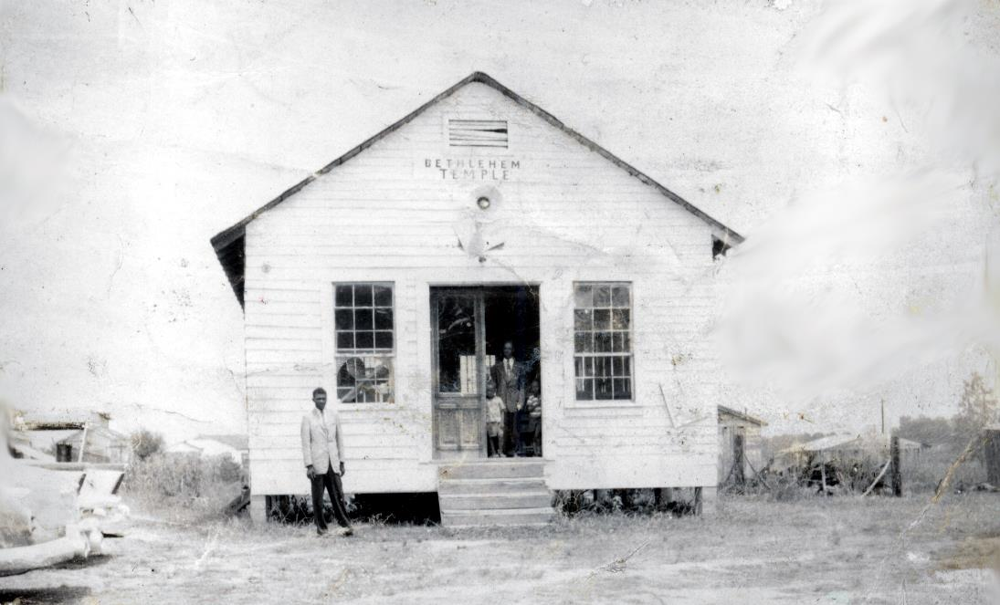
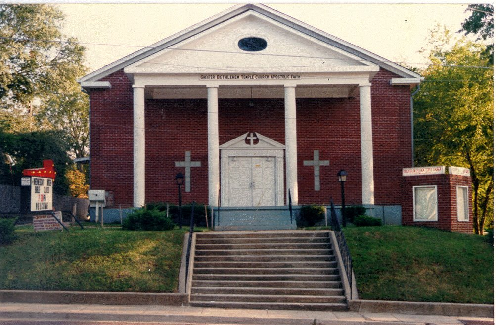

Greater Bethlehem Temple Church was founded in 1954 by Elder Phillip Coleman, a young minister whose life
had been completely changed a year earlier in Detroit, Michigan. He had visited Clinton Street Bethlehem
Temple Church and heard a sermon on the Apostolic doctrine of salvation preached by Bishop Samuel Nathan
Hancock, the pastor. Though it was his first time hearing such a message, Phillip embraced it fully and
knew it had to be shared with the people back home in Mississippi. A year later, himself now a minister,
he began sharing the same message of hope from the home of his mother, Maggie Coleman, which would grow to
become one of the most influential ministries in Mississippi.
In stark contrast to the successful ministry
he built, Phillip Coleman had come from a very modest background. He was born August 26, 1926, the sixth of
seven children to Henry and Maggie Coleman of Raymond, Mississippi only three years before the Great
Depression. Like most other African-American families in the area, the Colemans were very poor, yet young
Phillip grew up with an appreciation for the simple life and a deep respect for God, Country and family. He
served in the United States Air Force during World War II and later married Sarah L. McNeil of Clinton,
Mississippi. Together, from 1952 to 1978, they would raise fourteen children, seven sons and seven
daughters.

Phillip Coleman, a native
of Mississippi, moved his young family to Michigan in the early 1950s
while seeking better employment opportunities. It was there that he met Bishop Hancock, founder of the
Pentecostal Churches of the Apostolic Faith Association (PCAF) and joined his ministry in 1953. Shortly
thereafter, Coleman, too, became a minister. A year later, Minister Coleman moved his family back to
Mississippi after receiving a vision from God to start what became the first Apostolic church in the Hinds
County area. He opened the church, later known as Bethlehem Temple, for the first time in 1955 in the home
of his parents with five members, Sarah Coleman, his wife, Maggie Coleman, his mother, Katie Thomas, his
sister, Jimmy Coleman, his brother, Nannette Coleman, his sister-in-law, along with Elder LeVester McLaurin,
who had traveled from Clinton Street Bethlehem Temple in Detroit to assist him.
As the church began to grow,
Elder Coleman’s responsibilities for both family and church would prove a great challenge. As husband and
father, he worked long, hard hours to support his family, yet their single-framed home had large cracks in
the walls and floors. As pastor, he gave a great portion of his time to teaching, preaching and counseling
his new members. Yet he also bore the financial responsibility of the church. In 1955, with the help of
Bishop David Collins of Clinton Street in Detroit, Elder Coleman and his church purchased three lots on
Dewey Street in Subdivision No. Two of West Jackson. Although they had limited construction experience, he
and his members constructed a wood-framed church with a seating capacity of 150. In 1961, a small kitchen
and dining room was added to the structure.

As the membership continued to
grow, the church would make
plans to build again to accommodate the increasing numbers. In 1970 the church purchased a building for
$80,000 at its present location, 1505 Robinson Street, and became known as Greater Bethlehem Temple. The
membership quickly outgrew the structure and a decade later acquired the adjacent Lutheran church building,
known as the Annex temple, to accommodate church services for children. By the Mid-1980s the membership had
swollen to well over 1000, and it became apparent that the church needed a larger facility still. The
members prepared to build again and plans were made to construct the present facility with a sanctuary
capacity of nearly 2500. The members built and moved into the new facility in 1989 with a membership of
nearly 2000. On the strength of its membership and faithful vision of its pastor, the church continued to
acquire real estate throughout West Jackson, including apartment buildings, guest homes and recreational
property.
On October 2, 2007, Bishop Phillip Coleman, the founding pastor, departed this life at the age of
81. In February of 2008, after much prayer and consideration, the church chose as its new leader District
Elder Robert N. Fortson, Sr., who had served as an associate minister under Bishop Coleman for nearly 30
years. Today, the church continues in the legacy of its founding pastor by spreading the Apostolic Gospel
of salvation and reaching out to lost souls worldwide through over 50 distinct ministries.